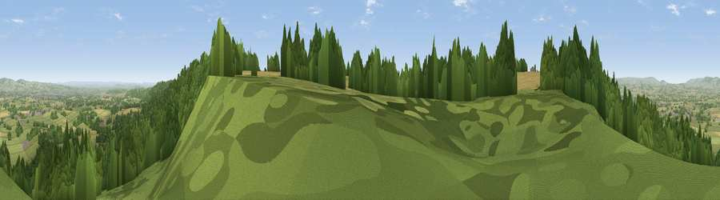

Viewpoint near West Buckland
#4660 in England · top 12% of its area beats it · near West BucklandWhere it is
The exact computed spot (ST 18475 17250). Click the marker for map links.
The view, rendered

A 360° render of this exact spot computed from the terrain model, tree cover and land cover — summer colours, afternoon light, calibrated against photographs of famous viewpoints. Real trees, hedges and buildings will differ in detail.
The panorama
Grey silhouette: terrain skyline in each direction (720 bearings, Earth curvature and refraction included). Dashed green: skyline with trees (+15 m) and buildings (+8 m) as obstacles. Blue strip: how far the ground is visible on each bearing.
Where the view opens
Wedge length = distance to the farthest visible ground on that bearing (vegetation-aware). Rings at 10, 25 and 50 km.
What fills the view
50% woodland · 33% grassland · 15% cropland · 2% built-up
Angular shares of the visible panorama (visual magnitude), not map area. Landscape diversity 0.47 (0–1 Shannon).
Key numbers
More beautiful places nearby
The staircase of upgrades: each row has a higher view potential than everything closer. Driving times are estimates from straight-line distance, calibrated against real road routing — check an actual route before setting out.
| Place | Direction | Drive | Score |
|---|---|---|---|
| Viewpoint near Pitminster | E · 1 km | ~3 min | 77.3 |
| Viewpoint near Broomfield | N · 15 km | ~27 min | 78.5 |
| Cothelstone Hill | N · 15 km | ~27 min | 82.1 |
| Viewpoint near West Bagborough | N · 17 km | ~30 min | 84.3 |
| Wills Neck | N · 18 km | ~31 min | 85.7 |
| Viewpoint near Holford | N · 24 km | ~39 min | 85.9 |
| Viewpoint near West Quantoxhead | NNW · 25 km | ~40 min | 87.8 |
| Viewpoint near West Quantoxhead | NNW · 25 km | ~41 min | 88.7 |
50.94890, -3.16191 · source: screening · position refined by local search. Computed location — check access rights before visiting.